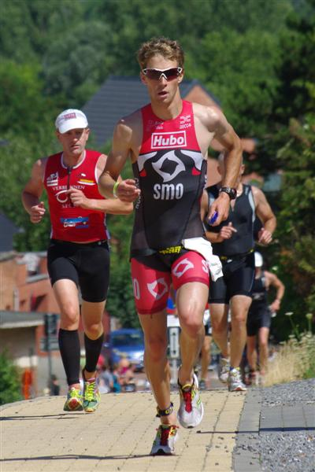
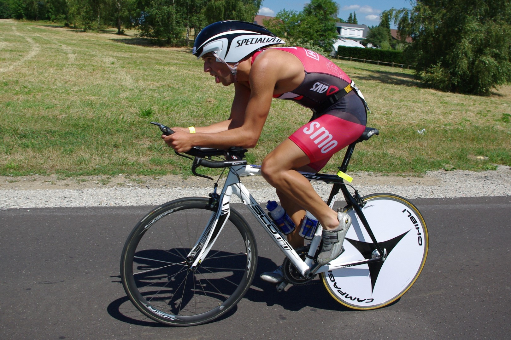

Terwijl afgelopen zondag het zonnetje stilletjes maar zeker aan de hemel verscheen, begon het in Aarschot te kriebelen. Zo’n 500 atleten stonden er paraat om er hun beste beentje voor te zetten tijdens het jaarlijkse triatlon-event. Anders dan vorig jaar werd er dit jaar gezwommen zonder pak, maar dat kon de rode brigade niet deren om alsnog sterk te presteren.
Zo bewezen Willem Brems, Stephane Staelens en Frederick Dormaels op de 1/8e. Vanaf het startschot werd al duidelijk dat SMO er zin in had. Stephane kon zijn eerste meters doorbrengen in het gezelschap van Fredje, maar Fredje voelt zich duidelijk thuis in het water en danste zich een weg naar voor om zo knap als 3e (als ik mij niet
vergis) uit het water te komen. En dan was er nog Willem Brems, ook wel bekend onder de naam Free Willy, die hij deze keer nogmaals alle eer aan deed. Als eerste stormde hij uit het water, maar daar bleef het niet bij! Brems vloog vervolgens ook nog eens op zijn fiets het pittig gekruide parcours af. Zo kon hij, meer dan verdiend, als eerste de eindmeet halen voor Tom Mets en Geert Janssens. Ook Stephane Staelens breide verder aan zijn sterk seizoen en kon knap als 10e over de streep komen. Hiermee bleef hij nog net Fredje voor, die bestek legde op een sterke 13e plaats!

Een uurtje later was het dan de beurt aan de rest van de SMO-delegatie. Een 2-tal km zwemmen, 60km fietsen (pittig gekruid) en 15km lopen stonden op het programma. Voor mezelf was het de eerste maal dat ik kon proeven van deze afstand en bij de start zat ik dan ook wel met enkele vraagtekens. Maar dankzij de goede raad van Dobbelaerke, wist ik mij toch op mijn gemak te stellen en voor ik het wist, lag ik samen met de rest van de rode brigade, te spetteren in het water.
Rustig begonnen is half gewonnen… dacht ik aanvankelijk… want dan zou ik zeker wel die eindmeet halen, maar eenmaal gestart kon ik het niet laten, gaan met die banaan! Het zwemmen verliep vrij vlot en ongeveer als 10e kon ik mijn fiets op springen op een 3 à 4 min van Tim Brydenbach. Tijdens het fietsonderdeel bleef mijn achterstand min of meer gelijk, waardoor ik het lopen op zo’n 3min50 achterstand kon starten. Aangemoedigd door de vele supporters, warm gemaakt door Hans Cleemput, en door heel wat smo-atleten, kon ik doorstromen naar de kop van de wedstrijd. Uiteindelijk ben ik gestrand op zo’n 40 sec van de verdiende winnaar Tim Brydenbach.. Helaas net niet genoeg voor een eerste plaats, maar wel een plaats waarmee ik heel tevreden mijn eerste 1/3e triatlon kan afsluiten.
Ook de andere SMO’ers mag ik zeker niet vergeten, want naast de vele schouderklopjes die ik zowel voor, tijdens als na hun eigen wedstrijd van hen kreeg, noteerden zij allen knappe prestaties.
Timothy Saey 3u25.30
Bart De Vrieze 3u31.27
Davy Boelens 3u34.50
Steven Haeck 3u43.50
Aaron Overmeire 3u48.42
Steven Beerens 3u48.56
Steven Van Hoorebeke 3u49.16
Luc Goethals 4u02.17
Kortom SMO mag Aarschot afsluiten als een schot in de roos!
Een dikke proficiat aan allen!
Hannes